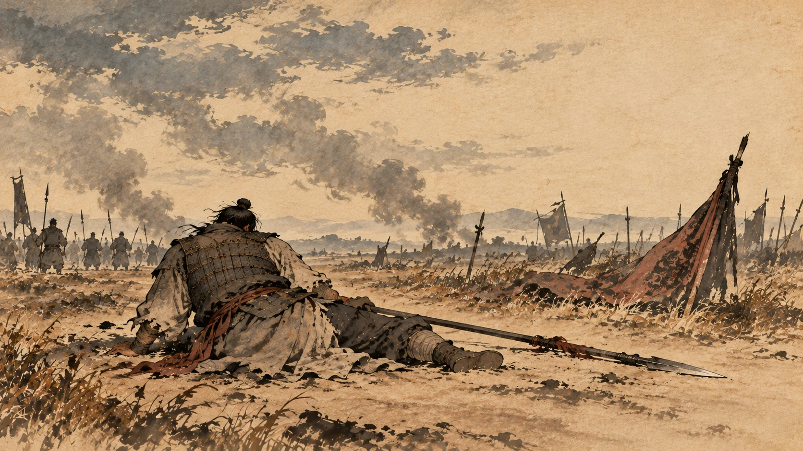
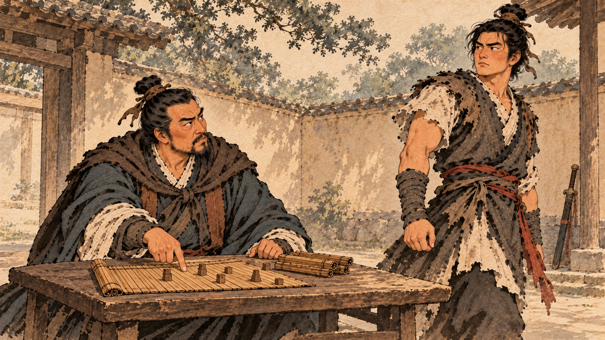
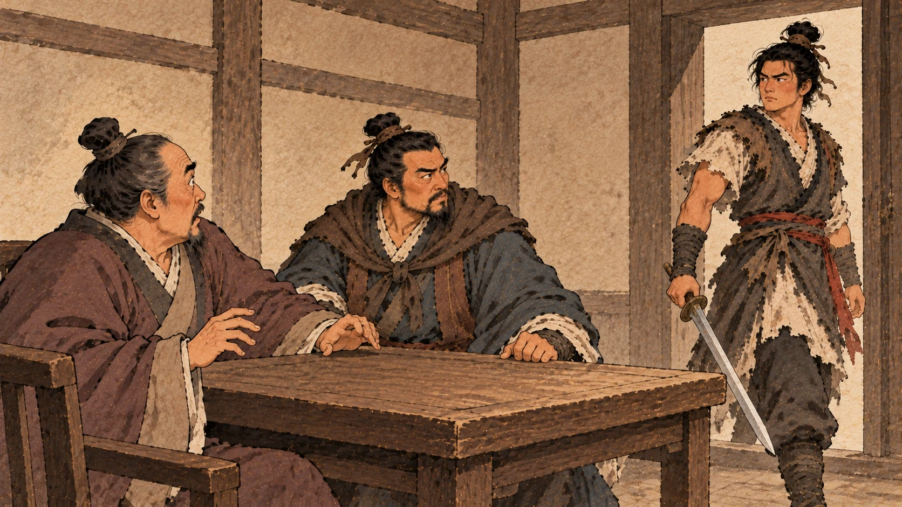
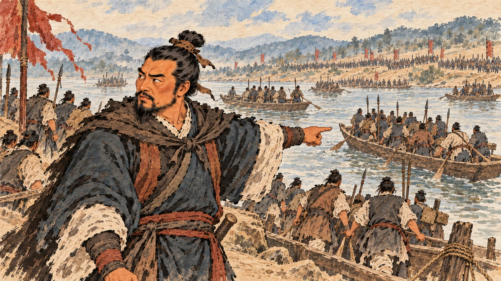
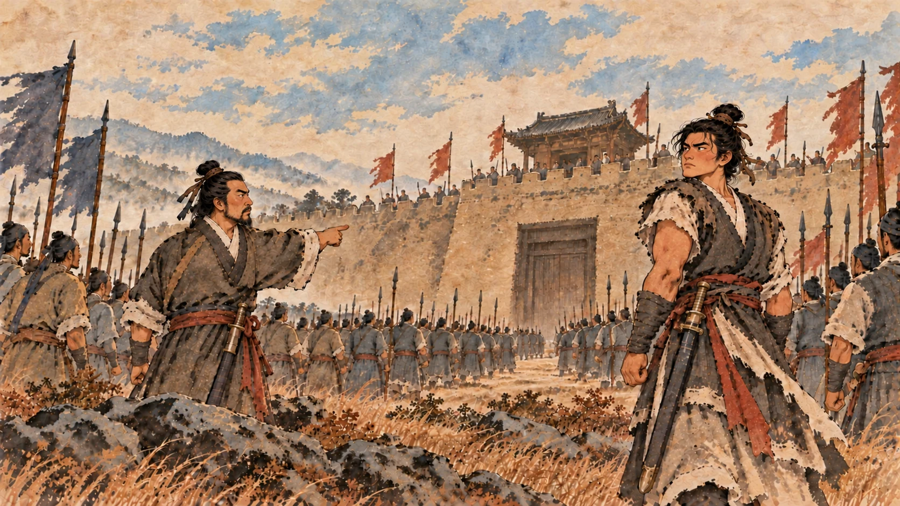

丰邑之叛：为什么老家的人先反了他
一、一个不服气的人
第二章说过，沛公带着二三千人出去打了几个地方，然后回来守丰邑。
守丰邑要留人。他留下的人叫雍齿。
《史记》关于雍齿的出身没写几句——他不是萧何那种能人，也不是樊哙那种死忠。他就是沛县一带的一个豪杰，跟刘邦是同一个圈子里的人。
然后魏国的人来了。
陈胜派出去略地的魏人周市，派人来找雍齿，说了一段很实在的话：
丰，故梁徙也。今魏地已定者数十城。齿今下魏，魏以齿为侯守丰。不下，且屠丰。
丰邑本来是梁国移民过来的地方。现在魏地已经有几十座城归了魏。你要是归魏，魏国封你为侯，还让你守丰邑；你要是不归，我们就屠了丰邑。①
条件很清楚：归顺，你当侯；不归，城破人亡。
雍齿的选择是：反。
《史记》在这里给了五个字的解释：雍齿雅不欲属沛公。②
“雅”的意思是素来、本来。他本来就不愿意归刘邦管。
这五个字很重要，因为它是这本书里第一次出现“自己人不服自己人”。你要明白刘邦这个首领是怎么来的——第三章里，他不是打出来的，是让出来的：萧何、曹参算过账，不肯当，他才当上。
一个让出来的首领，压不住那些跟他平起平坐的同辈人。
雍齿就是这么想的：凭什么你？
二、自己的老家，打不下来
沛公带兵回来攻丰邑。
结果是：不能取。③
打不下来。
《史记》接着写了一句话，写得很轻，但分量很重：沛公病，还之沛。
他病了，退回沛县。
一个刚起事的首领，第一仗是打不下来的；第二件事是他的老家背叛了他。而且丰邑不是别人的地方——那是他自己出生长大的地方，中阳里就在丰邑。
《史记》说他“怨雍齿与丰子弟叛之”——他恨雍齿，也恨丰邑的子弟。这份恨意，他是记了很久的。
那时候他手上的力量不够。他开始到处借兵。
他听说东阳的甯君和秦嘉立了景驹做“假王”，驻扎在留县，就跑去投靠，想借兵打丰邑。接着跟秦军打，在萧县西边打输了；回头收拢人马，去打砀，打了三天才攻下来；收编了砀地的兵，凑到五六千人；又打下邑，打下来了；然后回头，再攻丰邑。④
这一段是沛公起事以来最狼狈的日子：自己的老家拿不下来，得四处依附别人，打了几个小地方，攒了五千人。
也就是在这时候，他听说薛县来了一个人。
三、去薛县见一个人
那个人的名字叫项梁。
沛公带着一百多个骑兵去见他。⑤
项梁给了他五千人和十名五大夫将。
《史记》对这一面只写了这一句，但它是这本书的一个转折点：刘邦和项羽这两个名字，从这一刻起接上了。
在讲他们后来一起干了什么之前，得先把项家这两个人交代清楚——因为接下来这些年，天下真正的雇主是谁，得看这个人。
四、三代的将门

项梁是下相人。他们家的来历比刘邦家清楚得多。
《史记》说：项氏世世为楚将，封于项，故姓项氏。
项家世世代代是楚国的将军，封在项地，所以姓项。⑥
项梁的父亲叫项燕——就是第二章里陈胜借来当旗号的那位楚国名将。
而项燕的结局是：为秦将王翦所戮。被秦国的将军王翦杀了。⑦
所以项梁身上背着两件事：楚国将军的家世，和被秦朝杀掉的父亲。他起兵的理由，比陈胜的“误了期”结实得多。
五、一个学什么都学不成的年轻人

项梁有个侄子，叫项籍，字羽。后来天下更熟悉他的名字是项羽。
《史记》写这个人，一开始写的不是他的战功，是他读书的事。
项籍少时，学书不成，去。学剑，又不成。
小时候学认字写字，没学成，放弃了；改学剑术，又没学成。
他叔叔项梁火了。
项籍说：书足以记名姓而已。剑一人敌，不足学，学万人敌。
认字嘛，能记账会写名字就够了；剑只能对付一个人，不值得学——我要学能对付一万个人的本事。⑧
项梁听了很高兴，就教他兵法。项籍也大喜。
然后《史记》补了一句：略知其意，又不肯竟学。
大概懂了点意思，又不肯学完。⑨
这句话我特别喜欢。一个少年，看不起写字，看不起学剑，要学“万人敌”；真教他了，他学一半又不肯学完。
这不是一个刻苦的人。可他后来打的那几仗，是那个时代最好的仗。
再说他的身体：《史记》说他长八尺余，力能扛鼎，才气过人，吴中的年轻人早就怕他。
而项梁这时候在干什么呢？他杀了人，为了避仇，带着项籍躲到了吴中。⑩
在吴中，项梁成了当地的头面人物。有大事的时候——徭役、丧事——常常由他主办。而司马迁写了一句很要紧的话：阴以兵法部勒宾客及子弟，以是知其能。
他暗地里用兵法来组织这些宾客和子弟，借着这个知道自己手下谁有本事。⑪
也就是说：项梁在别人家办丧事的时候，已经在练兵了。等到天下真的乱起来，他手上不是一堆不认识的人，是一支他早就摸过底的队伍。
六、杀太守那天

秦二世元年九月，会稽郡的太守殷通找项梁来谈话。
他说的是：江西皆反，此亦天亡秦之时也。吾闻先即制人，后则为人所制。
长江以西全都反了，这是老天要灭秦的时候。我听说先动手的能制服别人，后动手的被人制服。⑫
他说得很对。
然后他告诉项梁：我想发兵，让你和桓楚做将军。
项梁答应了，还提了一个条件：桓楚逃亡在外，没人知道他在哪儿，只有项籍知道。
于是项梁出去，吩咐项籍拿着剑在门外等着；自己回到屋里，跟太守坐着，说请让我叫项籍进来，让他去召桓楚。太守说好。
项籍进来了。
过了一会儿，项梁给项籍使了个眼色，说了三个字：可行矣。
项籍拔剑，砍下了太守的头。⑬
《史记》写这一下之后的场面：门下大惊，扰乱，籍所击杀数十百人。一府中皆慴伏，莫敢起。
项籍一个人杀了几十上百人，整个郡府都趴下了。
一个二十出头的年轻人，在别人家的郡府里，一个人镇住了一屋子人。这不是兵法，这是天赋——他“学万人敌”没学完，但他天生就会打仗。
项梁拿着太守的头，佩上太守的印，召集他早就认识的那些豪吏，说了自己要干的事，然后起兵。他派人去收下属各县，得精兵八千人。⑭
七、八千人渡江

有意思的是，起兵之后，项梁手上的第一件正经事，是名分的问题。
有个叫召平的人从广陵来，假传陈胜的命令，拜项梁为“楚王上柱国”，让他赶紧带兵西进打秦。项梁就带着八千人渡江西进。⑮
渡江之后，他遇到了一个自己送上门的人。
东阳有个叫陈婴的，本来是县里的令史，一向谨慎可信，被称为长者。东阳的年轻人杀了县令，聚了几千人，要推个首领，推来推去没合适的，就去请陈婴。陈婴推辞，不行，被强行立为首领，跟着他的人有两万。
那些人还想干脆立陈婴为王。
陈婴的母亲拦住了他，说了一段话：
自我为汝家妇，未尝闻汝先古之有贵者。今暴得大名，不祥。不如有所属，事成犹得封侯，事败易以亡，非世所指名也。
我嫁到你们家以来，没听说过你家祖上有谁显贵过。现在忽然得了大名，不吉利。不如去依附别人：事情成了，还能封侯；事情败了，也好逃跑——你不是那个被指名道姓的人。⑯
你回头看第三章：萧何、曹参不肯当首领，算的是同一笔账。一个沛县的狱吏，一个东阳的老太太，都能在几天之内把这笔账算清楚。
陈婴听了母亲的话，对部下说：项氏世世将家，有名于楚。要干大事，不靠这种人不行。我靠上一个有名望的家族，灭秦就稳了。
于是两万人，归了项梁。
接着黥布、蒲将军也带兵来投。项梁手上一共有了六七万人，驻扎在下邳。⑰
再往后：秦嘉立了个楚王叫景驹，挡着项梁的路，项梁说他“倍陈王而立景驹，逆无道”，一战把他打散，秦嘉死，景驹逃到梁地死了。项梁又请来一个七十岁的老人叫范增，范增给他上了一课，讲的是“楚虽三户，亡秦必楚”，劝他一定要立楚国的后代。
项梁听了。他派人到民间去找楚怀王的孙子——那人正在给人放羊——立为楚怀王。陈婴做了楚国的上柱国。项梁给自己上的号是“武信君”。⑱
一个放羊的年轻人，从此成了天下反秦的旗子。而牵着他的人，是项梁。
八、并肩

项梁的地盘和刘邦的地盘接上了之后，两个人开始一起打仗。
《史记》里有一句很短的记载，你要留意：项梁使沛公及项羽别攻城阳，屠之。
项梁派刘邦和项羽一起去打城阳，打下来之后，屠城。⑲
这是这两个人的名字第一次被写在同一句话里。
后面还有：西破秦军濮阳东，以及在雍丘打败秦军、斩了李由。他们并肩打了不止一仗。⑳
这一段时间里，他们是一边的。
然后就是那一年的秋天，项梁连打了几个胜仗，开始骄傲了。有个叫宋义的人劝他，他不听。秦朝的章邯在夜里让士兵衔着枚——就是不发出声音——偷袭项梁。项梁大败，死在定陶。㉑
天下刚起来的这面旗，折了。
项梁一死，楚国的这支力量就交到了别人手里。而这一年，项羽二十四岁，刘邦四十八岁。
下一章：巨鹿之战——砸掉锅、凿沉船。